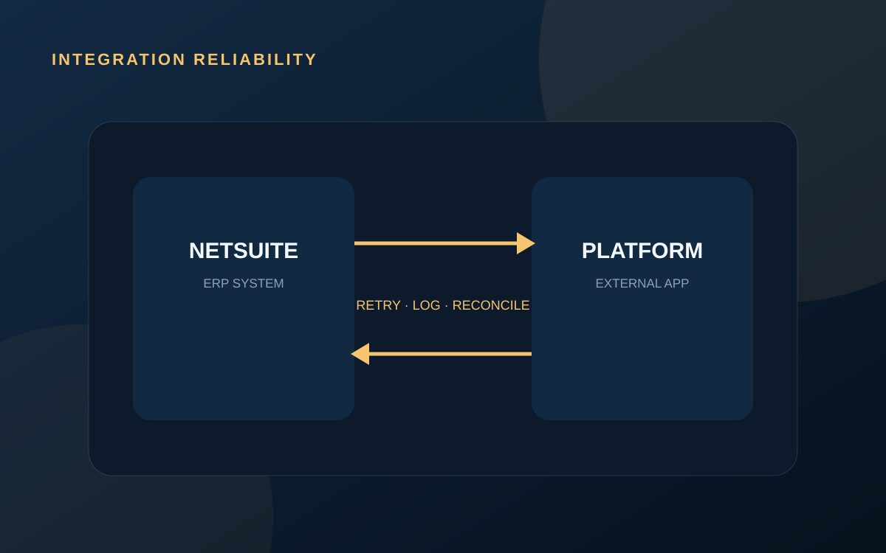

INTEGRATIONS
Reliable integrations need more than a successful API call
An HTTP 200 response proves that one request completed. It does not prove that the full business transaction is correct, complete, or reconciled.

Define the source of truth
Every important field needs an owner. Without source-of-truth rules, systems overwrite each other, records drift, and support teams cannot explain which value should win.
Validate before creating records
Required references, subsidiaries, customers, items, currencies, dates, and totals should be validated at clear boundaries. A rejected record with an understandable reason is safer than a partially created business transaction.
Design for retries
Network and platform failures are normal. An integration should know whether a retry creates a duplicate, updates the existing record, or resumes an incomplete process. Idempotent keys and external identifiers are essential.
Integration quality is measured most clearly when something fails.
Make errors operational
- Use messages that explain what failed and why
- Identify who owns the next action
- Separate transient errors from data errors
- Preserve the original payload and response
- Provide a safe replay or correction process
Reconcile important outcomes
For orders, invoices, payments, journals, inventory, or other financially important records, compare expected and actual results. Monitoring requests is useful; reconciling business outcomes is stronger.
Discuss the current process and the clearest technical next step.